The Heritage of Varanasi
From the riverfront ghats to historic temples, palaces and Buddhist monuments, Varanasi's heritage reflects centuries of religious, architectural and cultural history.
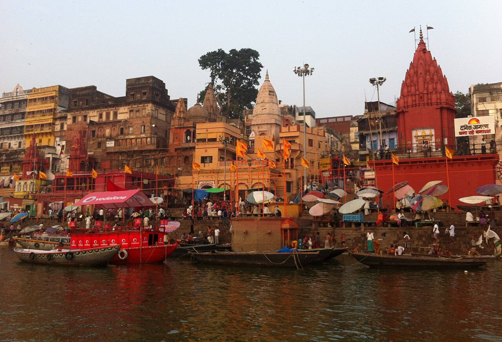
Dashashwamedh Ghat
The most prominent ghat in Varanasi, located close to the Kashi Vishwanath Temple. Dashashwamedh Ghat is the site of the evening Ganga Aarti, a daily fire ceremony performed by a group of priests that has become one of the city's most recognisable rituals. The ghat's name references the legend that Brahma performed ten horse sacrifices here.
Read more →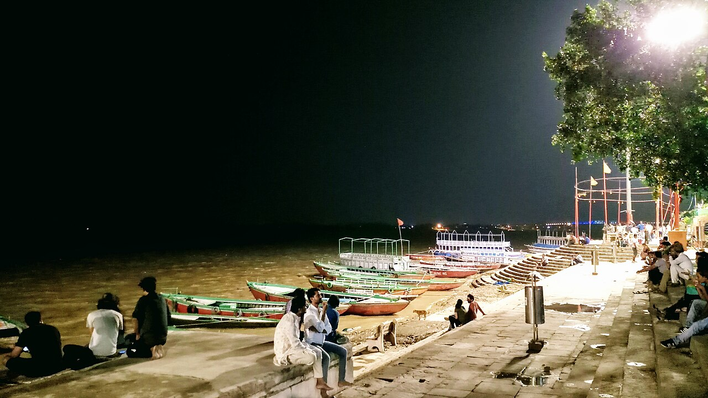
Assi Ghat
The southernmost ghat of Varanasi, where the Assi River meets the Ganges. A popular gathering place for cultural events, morning rituals and visitors.
Read more →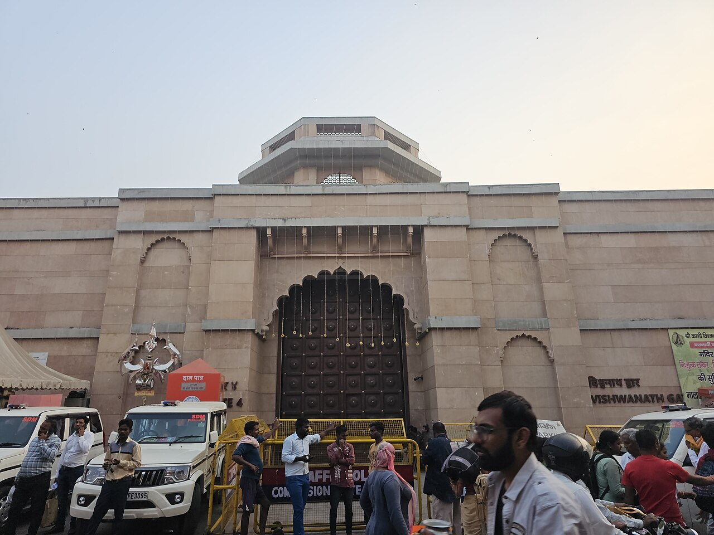
Kashi Vishwanath Temple
One of the most revered Hindu temples in India, dedicated to Lord Shiva. The temple's golden spire and dome are a defining feature of the Varanasi skyline.
Read more →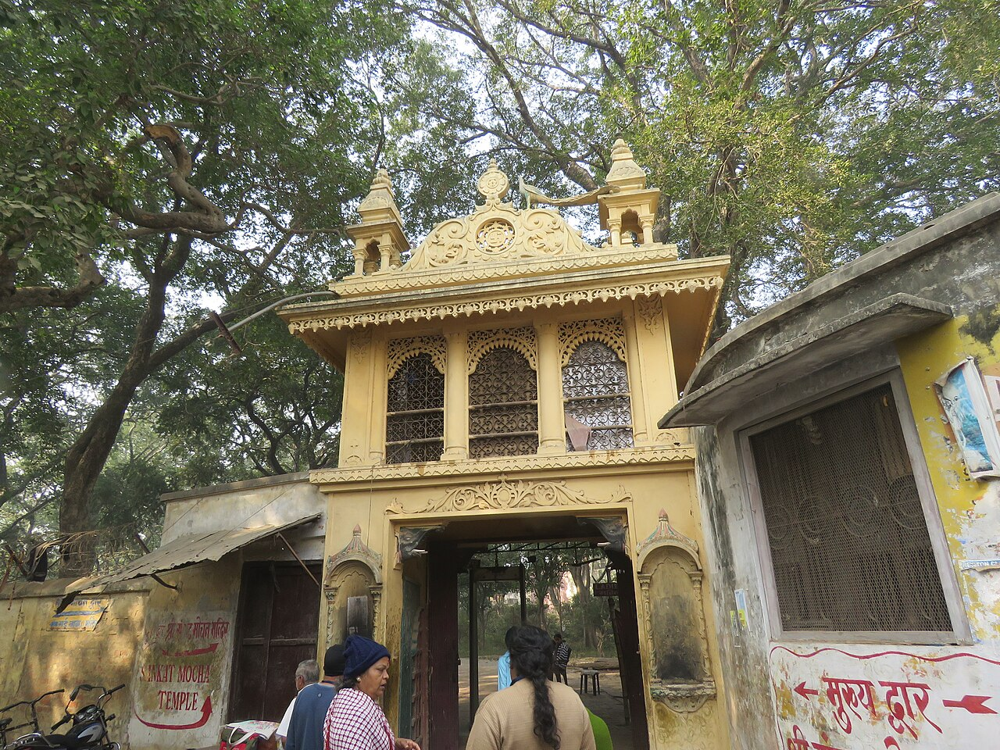
Sankat Mochan Temple
A temple dedicated to Lord Hanuman, associated with the poet-saint Tulsidas, and known for its cultural events and music festivals.
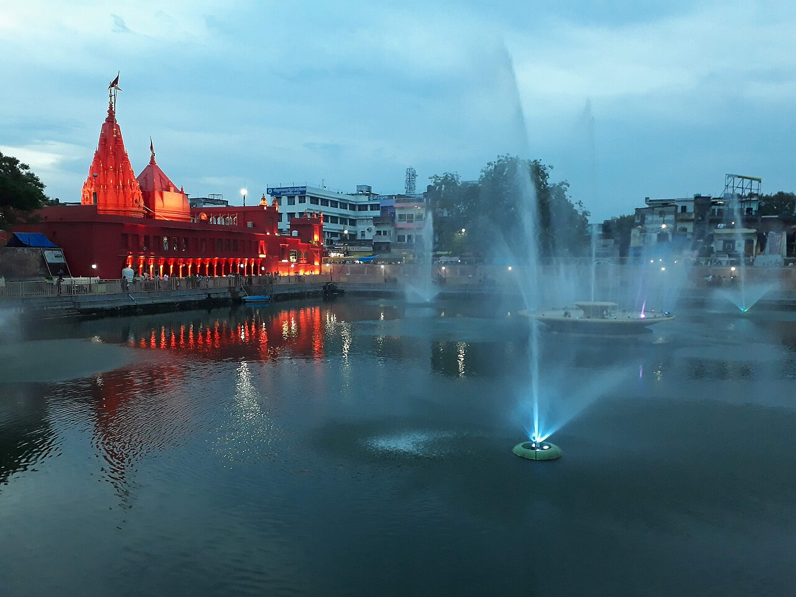
Durga Kund Temple
An eighteenth-century temple built in the Nagara architectural style, dedicated to the goddess Durga, adjacent to a large rectangular pond.
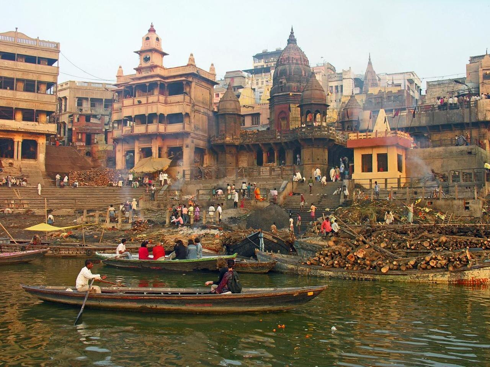
Manikarnika Ghat
One of the oldest and most sacred ghats in Varanasi, where Hindu cremation ceremonies have been performed for centuries without interruption.
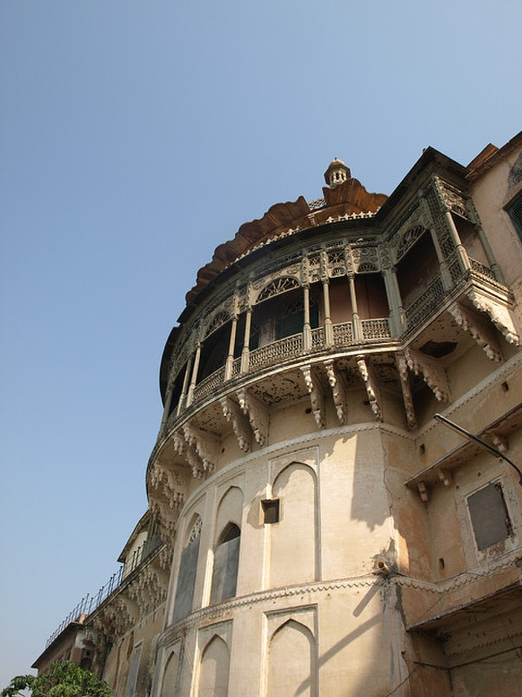
Ramnagar Fort
An eighteenth-century sandstone fort on the eastern bank of the Ganges, seat of the former Maharaja of Benares and home to a museum of historic artefacts.
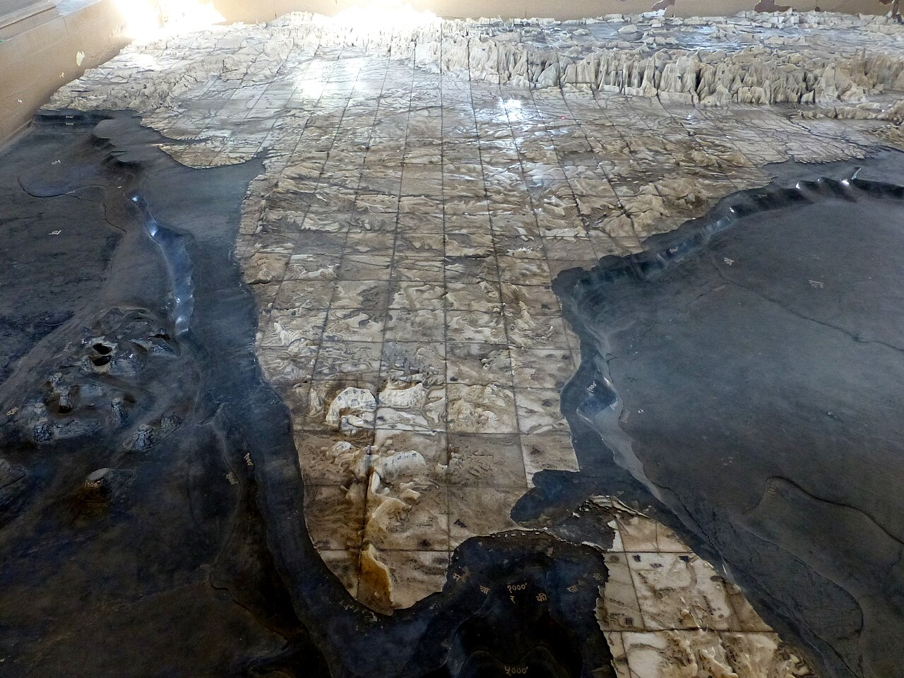
Bharat Mata Temple
A temple dedicated to the personification of India as a mother goddess, featuring a relief map of the Indian subcontinent carved in marble.
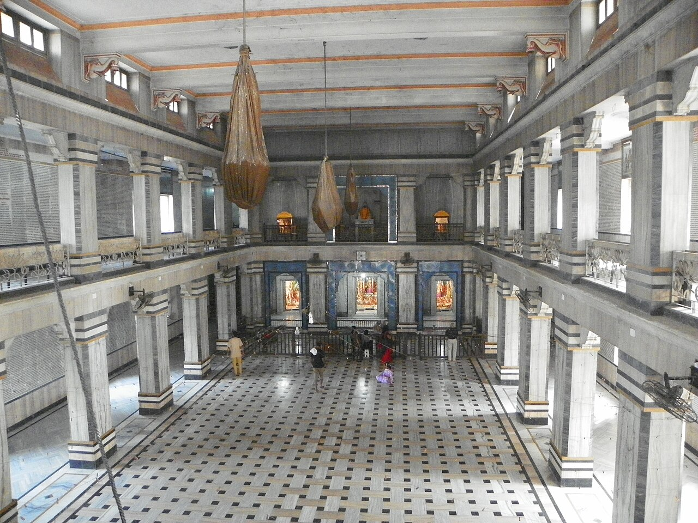
Tulsi Manas Temple
A modern temple built in white marble at the site where the poet Tulsidas is believed to have composed the Ramcharitmanas.
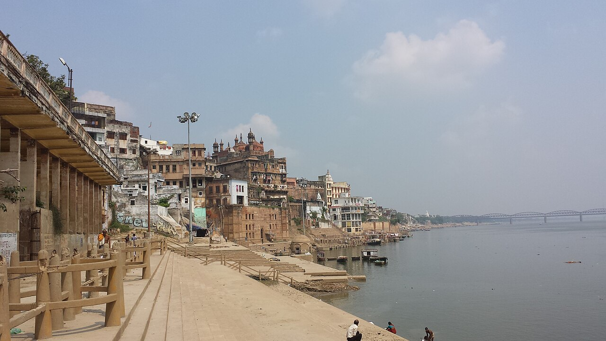
Alamgir Mosque
A Mughal-era mosque built during the reign of Aurangzeb, situated prominently on Panchganga Ghat with views across the Ganges.
Read more →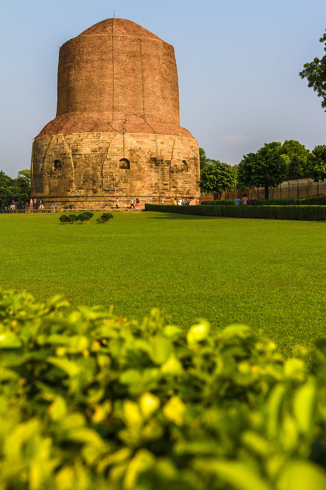
Sarnath
An important Buddhist pilgrimage site approximately ten kilometres from Varanasi, where the Buddha delivered his first sermon after attaining enlightenment.
Read more →